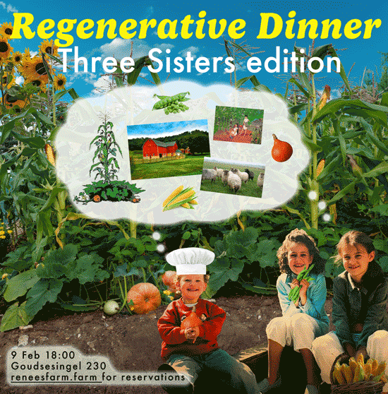

The next Regenerative Dinner is coming up on Sunday February 9! This one is all about the Three Sisters planting method (🌽++🎃), and hosted by three sisters Renée, Isabelle and Emma Verhoeven. We have been dreaming and learning about starting a farm together... and would love to share our vision with you through seasonal and local dishes and holistic stories 🐝
This special Three Sisters edition will take place on Sunday, 9 Feb, 18:00 in Rotterdam. We’ve arranged an incredible location so we can host even more of you this time🍽️ Click here for more info & a sign-up form, and spread the word to all food-, flora-, fauna- and farm-lovers🫘🥬🐓
🌱🌱🌱
A few months ago, Renée hosted her first Regenerative Dinner at Extra
Practice in Rotterdam. The goal was to launch
her catering company, while also publicly planting the seed of her life long dream: starting a regenerative
farm. Sister Emma initially just helped organise and run the event, but soon this farm-dream-seed started
germinating in her mind as well… and then Isabelle felt it sprouting too. A few months later there is
nothing we want more, and we would like to keep on nourishing this collective dream and developing our
vision out
loud, with like minded people (and future farm-guests!?) like you :)
We’re happy to work with amazing sous-chef Youri Blom again 💚